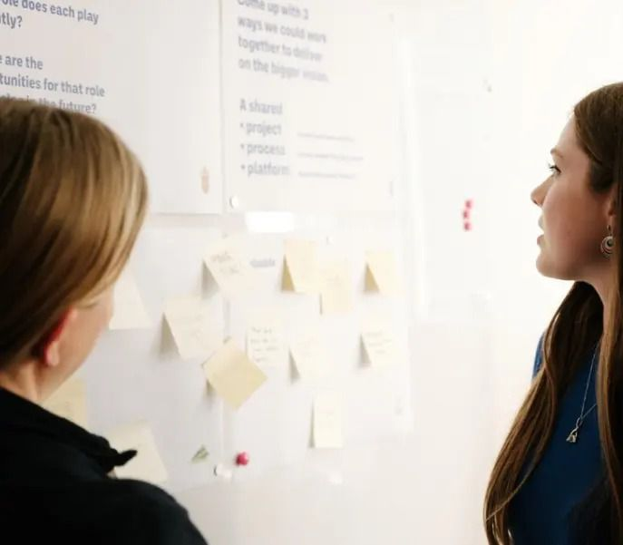
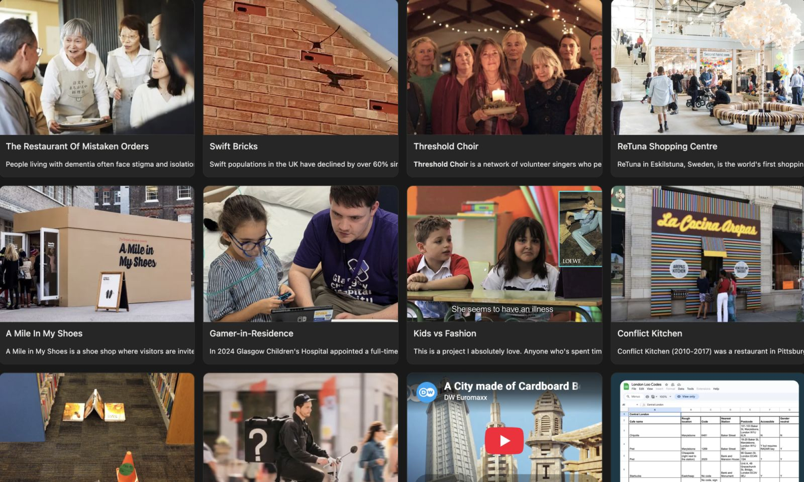
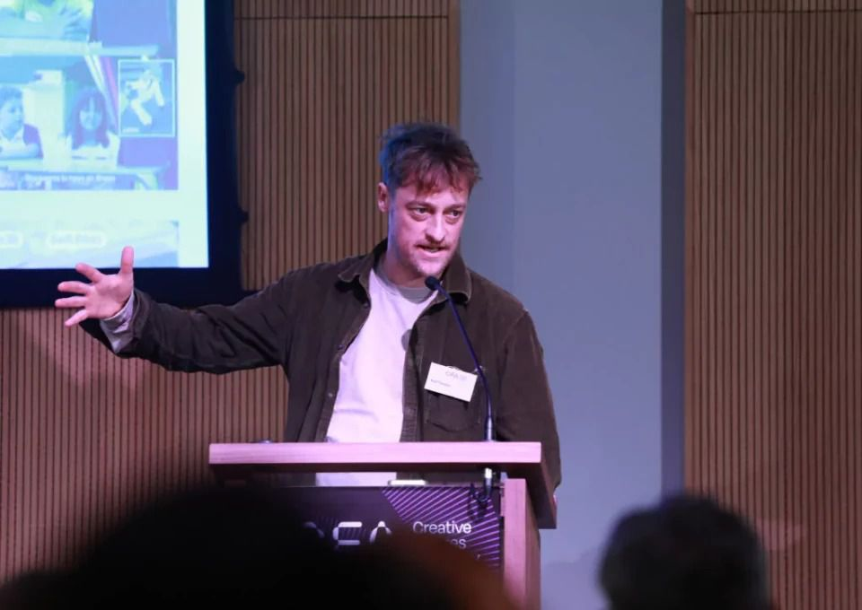
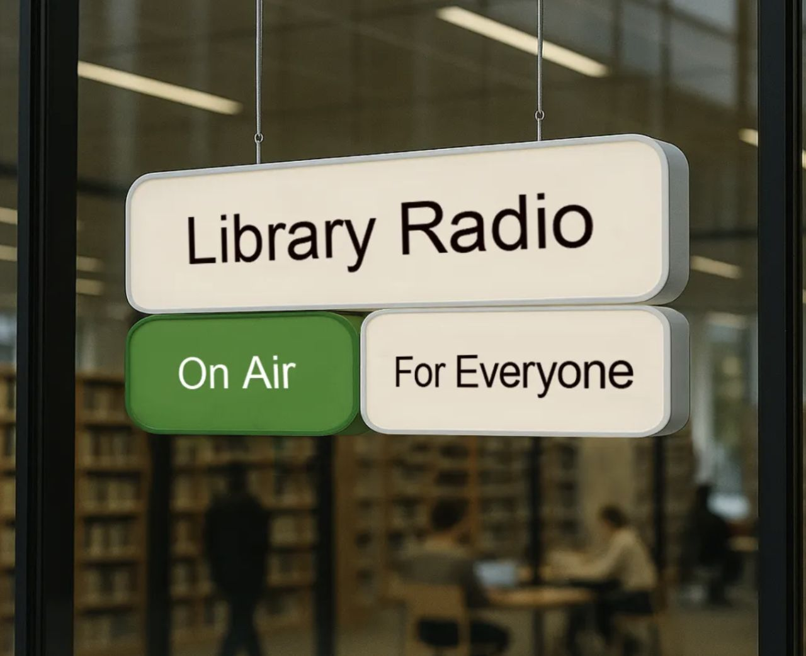
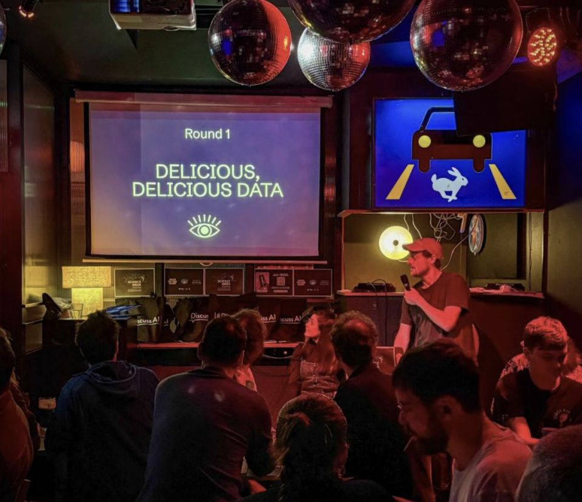
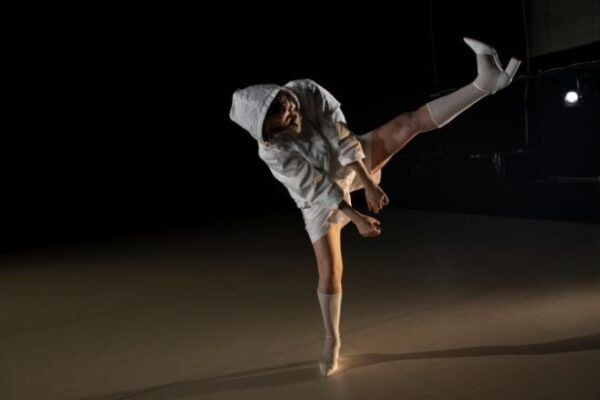
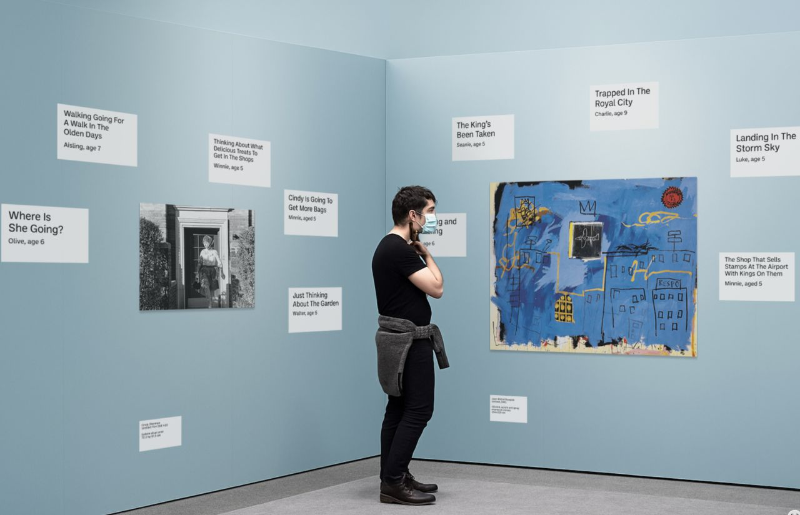

Wove Mind
Experiments, writing and
updates from the studio.
We write up what we learn as we go: experiments from Labs, short notes from projects, and talks we have given. Every entry is tagged by impact area, so you can follow the ones that matter to you.
Latest across every topic

Studio updateToolkits underway for Tailte Éireann’s 1,100 staff
Grace Mc Ginn

Experiment31 Days of Being More Human
Karl Toomey
 Studio update
Studio updateLaunch of Circular Lab at The Rediscovery Centre
Grace Mc Ginn

Studio updateShaping Ireland’s Creative Future
Karl Toomey
 Writing
WritingWhat Irish design students told us about the future of education
Karl Toomey

ExperimentWhat if libraries were also radio stations?
Wove Labs

Studio updateNice coverage of our data privacy game
Karl Toomey

Studio updateCat, Ciara and Erin went to the launch of Dublin Dance Festival’s 2026 programme
Karl Toomey · Dublin Dance Festival

ExperimentWhat if kids helped us connect with art in richer ways?
Karl Toomey
Show moreShowing 9 of 30

Want to collaborate on one of these ideas?
Karl Toomey, Labs Director